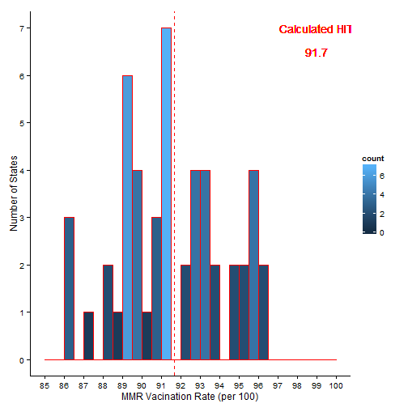

3. Who may be interested?
Potential Users/Stakeholders:

The HITCalculator is a simple, novel app that does 3 cool things:
a. Calculates HIT - a Vaccination (or herd immunity) threshold based on 2 user inputs
b. Displays a histogram of USA 2013 MMR vaccination rates for Children (19-35 mos)
c. Displays 2 USA state maps:
(i) States colored by MMR vaccination level
(ii) States colored to show those which fall below the calculated HIT or at/above the HIT
A sample calculation of an HIT (Herd Immunity Threshold):
\[V_c=\frac{1-1/R_0}{E}\]
R=Basic Reproduction Number between 12-18 for measles.
CHOOSE 12
E = Effectiveness of the immunity/vaccine.
CHOOSE 1.00
## Ro entered= 12
## E entered= 1
## Vc calculated= 91.66667 %
Here is the shiny app "plot" histogram produced by R code embedded in this slidify presentation:

/
#